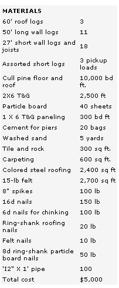

Main
Now that you've seen what can happen when you let a chain saw run amok, I'd like to talk about a more practical design. I've built two of these log cabins as rentals, and they're perhaps the most efficient (in terms of materials and space) and practical I've done. With no roof or floor insulation, they stay comfortable with one woodstove in 20°F weather. My tenants seem to be very pleased with them.
I used pier foundations: pyramids of rock and mortar about 2' high with pieces of rebar sticking out the top to pin the sill logs. (Keeping the logs at least 14" away from the ground is the most important way to make a log house last.) The piers are about 3' across at the base and are spaced 6' apart. I just scraped away the organic layer of soil and laid the piers right on the subsoil.
Technically, both of these houses are mobile homes: They have no permanent foundations and could be moved with a D-9 Caterpillar. Septic and building permits for mobile homes are about $1,000 cheaper than those for "permanent" structures, at least in my part of the country, and I saved $1,800 per building over a solid-concrete foundation.
All of the logs are joined at the ends with half-round notches, which are the easiest and most effective type I've tried. Each joint is spiked, and the logs are pinned with 1/2" water pipe on each side of a window or door.
The floor joists are logs with one face cut flat, and I used 2 X 6 tongue-and-groove (T&G) boards for all the flooring. I arranged the joists so that I could use odd-length pieces of T&G, which the mill sold me for quite a bit less than premium 8', 12', and 16' boards.
By the time I built these houses, I'd figured out that full second floors are more practical than lofts. Not only do they provide a lot more floor space, but they can also be sealed off to even out the heat in the house. I've found that the second floor is comfortable for sleeping even with the hatch between floors closed, and the first floor stays much cozier.
I've tried cedar shakes, aluminum sheets, asphalt shingles, and roll roofing, but as far as I'm concerned, none of them stacks up to colored steel roofing. It's durable, economical, and easy to install, and the brown color looks great on log houses. On these houses the metal is secured to random-width planks I got for $100 a stack (about 8,000 board feet), but my Alaskan duplex is firred out with 2 X 6s and has 5 1//2" of polystyrene insulation.
Instead of putting dormers in the roof, which are attractive but time-consuming to build, I just glassed in the gable ends. These work OK for light, but for appearance and ventilation, it might be worth the effort to build dormers. There's a screened vent near the peak at each end of the house, so that hot summer air can rise to the ceiling and escape.
I really worked on coming up with low-cost floor-finishing techniques on these homes, and, as a result, they have the nicest combinations of tile, rock, wood, and carpet of any of my houses. I even rocked the entries and the areas where the woodstoves go. I bought the carpet as roll remnants and laid it on salvaged particle board I got for $2 per sheet.
Both of these rentals are powered by hydroelectricity. I tapped springs high on the surrounding hillsides and tied them into high-head, low-water-flow turbines from Harris Hydroelectric Systems (632 Swanton Rd., Davenport, CA 95017). The 12-volt electrical systems simplified wiring. Hot water comes from coils in the woodstoves.
Even with all these nice details, the most I've spent on either of these 24' X 47' houses is $5,000.
|
 |
|
|